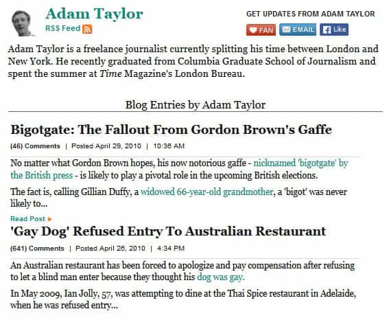

Douglas is Returnofkings.com's Chief Investigative Journalist, booze expert and part time soldier. Send tips or hate to [email protected] or if you are on twitter @douglasfromrok


While reading Roosh’s article about Adam Taylor and the Washington Post, I noticed quite a few things I would like to share with people here. The direct link between Adam Taylor and the Radio Free excerpt is an anomaly. Such blatant copying is a very rare thing to occur because it gives away a possible collusion between entities.
Looking for these open relationships is long and hard. The better way to analyze the relations and motivations of certain publishers, policy makers and other manipulators is to study the various themes they put out and where these themes repeat. While Roosh might assume that Adam Taylor is the paid shill by himself, I’ve noticed that his writing changes to whoever publishes it. Therefore the Washington Post Worldviews section may be the one that is parroting US State Department themes not just Adam Taylor.
As is shown in Roosh’s article, the similarities between Adam Taylor’s piece and Radio Free Europe are quite telling. It is a possibility that it is a coincidence but a small one. People that try to influence public opinion go to great lengths to ensure things like this do not happen which is why I’m assuming that Adam Taylor is part of larger machine and not a shill by himself.

Looking back at Adam Taylor’s writing for the Huffington Post, he wrote fluff pieces about gay dogs and other mass consumption items for that audience. His writing about geopolitical intrigue only takes the current form when he begins writing for the Washington Post. All his articles are the Who’s Who of what the US State Department doesn’t like. The roster includes Russia, China, Venezuela, Syria, and Zimbabwe. He writes nothing critical of any American allies.
Could this mean that his change in format indicate that someone turned him? I doubt it. Compare his work at the Washington Post to the rest of the “world views” section there, his writing is merely a contribution to a giant echo chamber and not unique to him.
As I said earlier, it’s very rare for open evidence of collusion such as the similar quotations to present themselves. A better technique to discern propaganda and collusion is to analyze trends and themes.You should look for such things as what the work attempts to convey, does it try to get you to think or act in a certain way, and does it try to get you to disregard other things.
In the Adam Taylor case, the pattern changes significantly from the Huffington Post to the Washington Post. You can also apply this trend analysis to pretty much any author. You can even apply to the contributors here at Return of Kings and see what you get. Do the trends indicate that the publisher may dictate what the writers write about? Do the trends indicate whether or not the writers have freedom to write about whatever they want? To help you readers out on this exercise I’ll inform you there were two articles I did at the direction of the publisher. They were my article for fat shaming week and my article for #backtothekitchen. Feel free to comment on any other trends you might notice and if they do not line up with the “about” page.
Read Next: Washington Post Caught Plagiarizing US Government Propaganda On Ukraine Conflict
{kind=link}
{kind=link}